Who I am
Born in Brazil and passionate about simplicity and minimalism. Found my special place in game development and game design.
Most of my art is simple and have the functional side of things as a main point, but with flexibility and a little bit of work I can make elaborate and flamboyant drawings.
Here is some of my work:
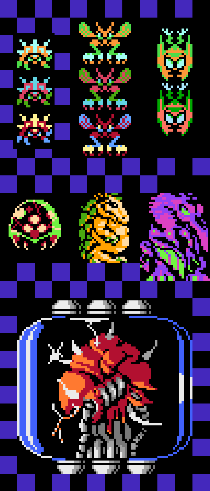
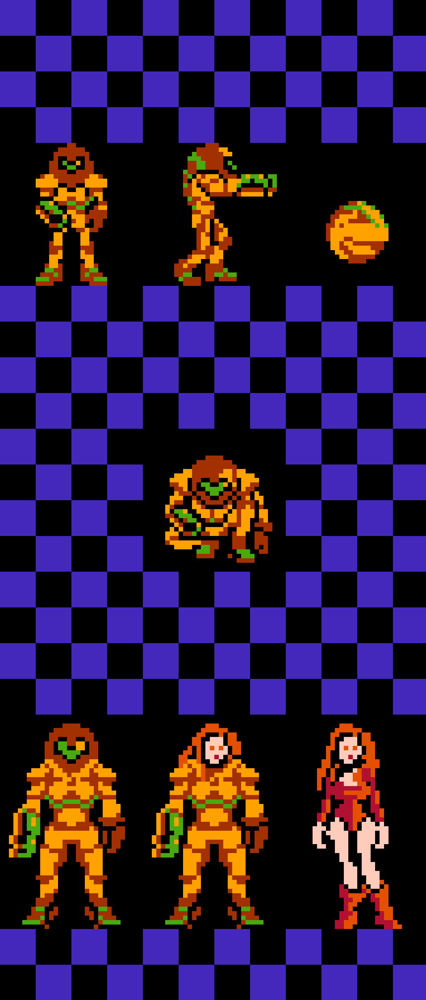
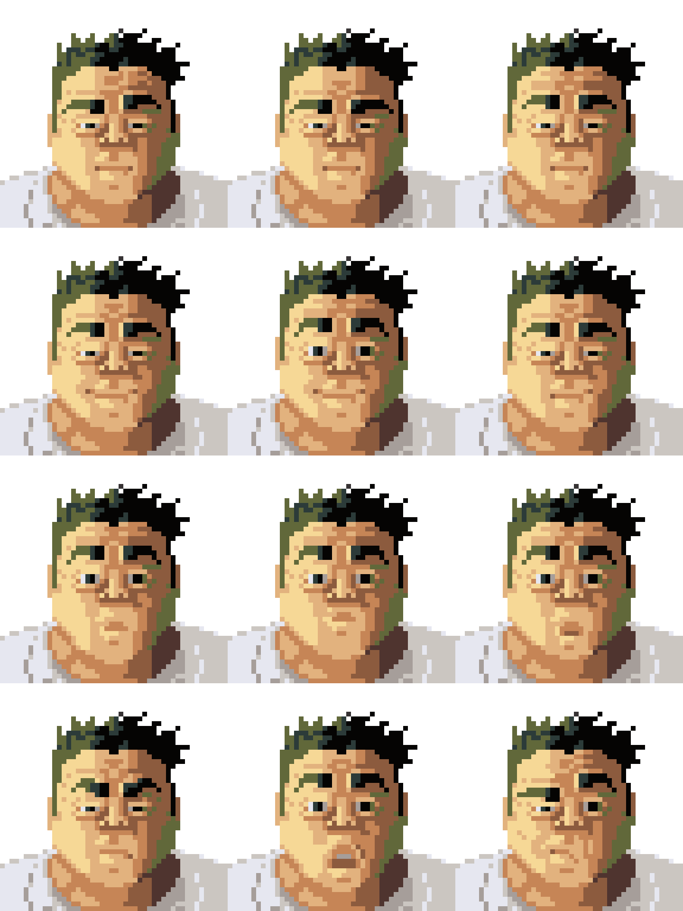
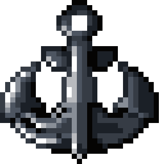
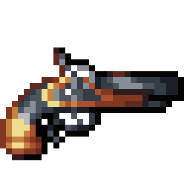
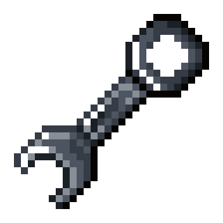
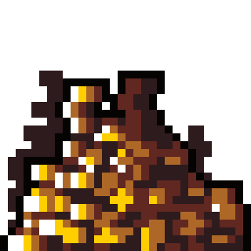
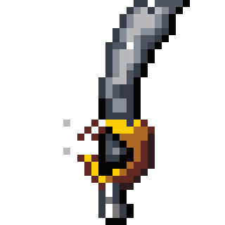
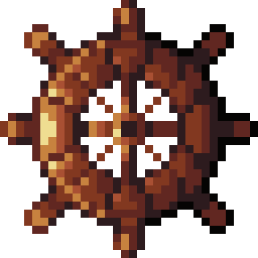
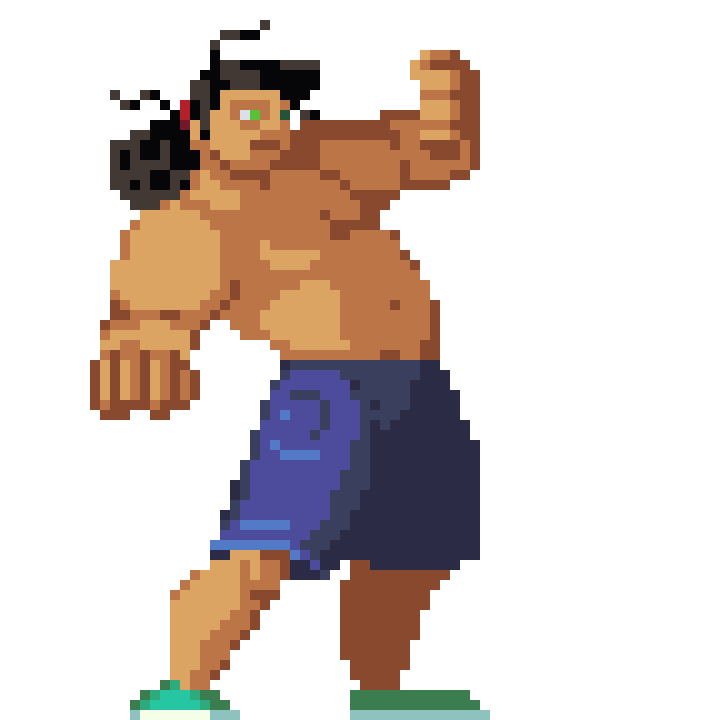
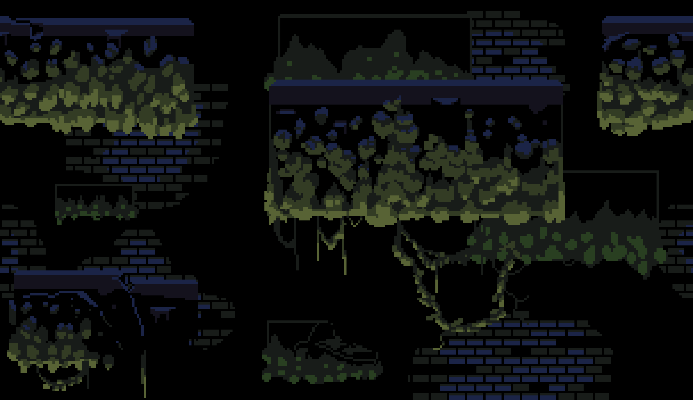
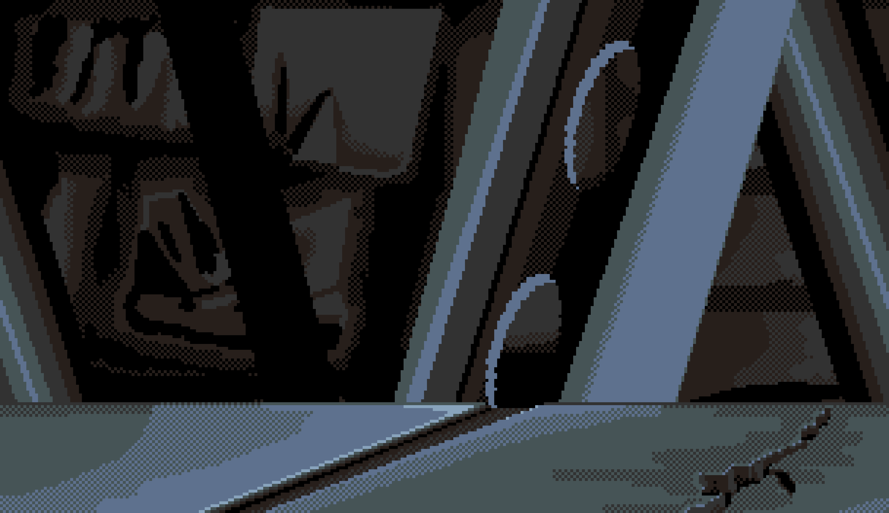
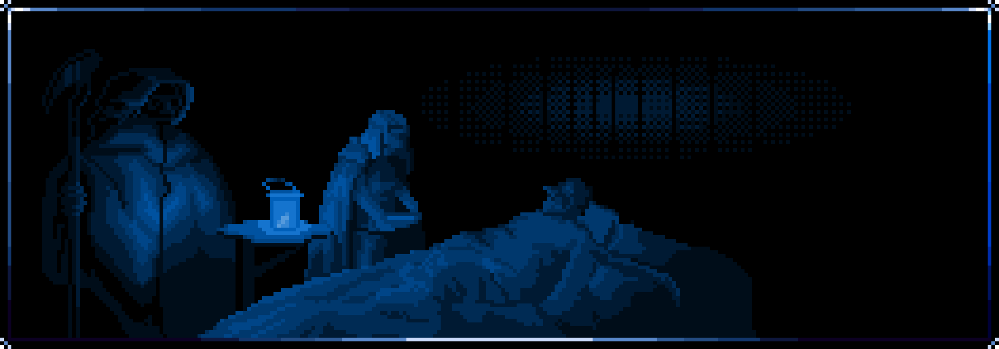
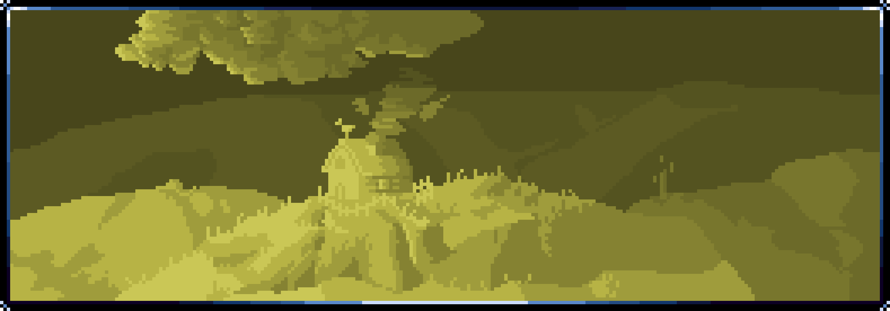
 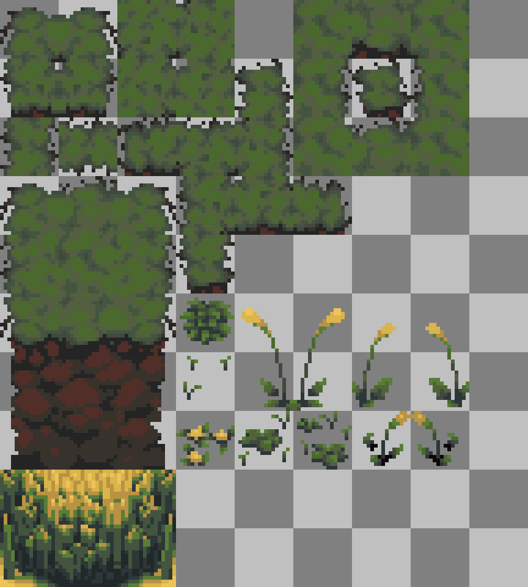
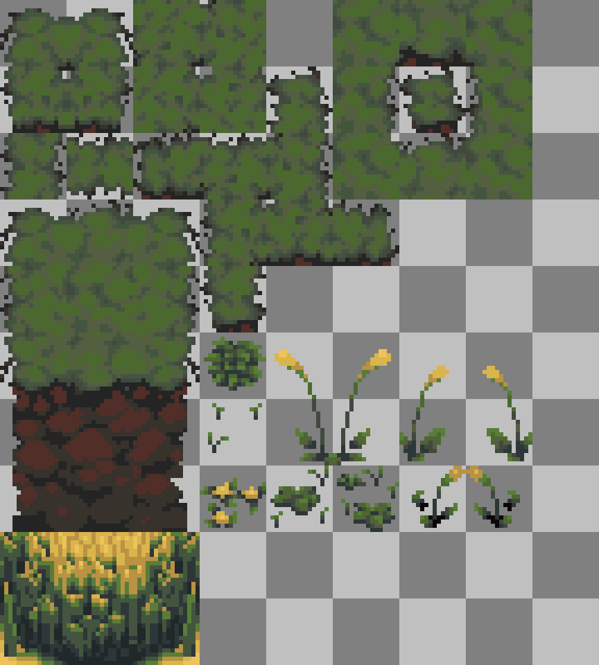
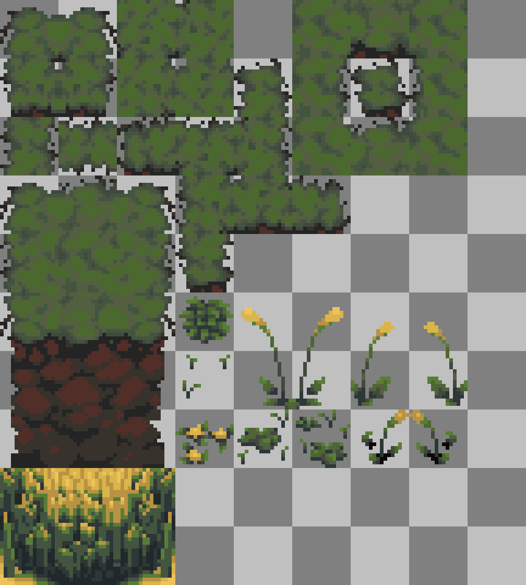

 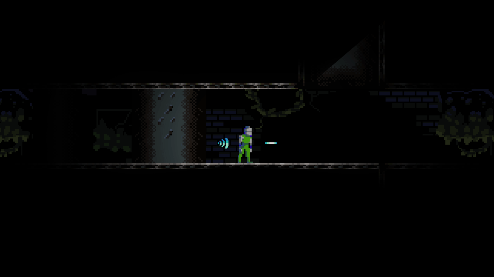
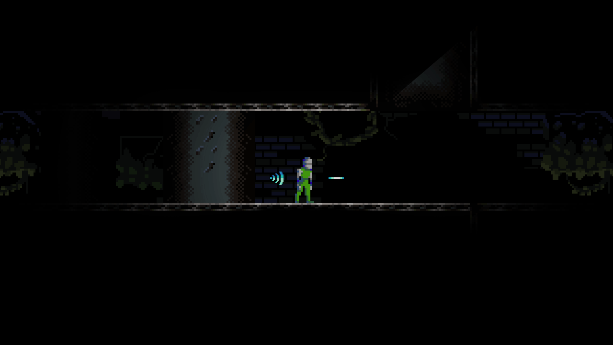


 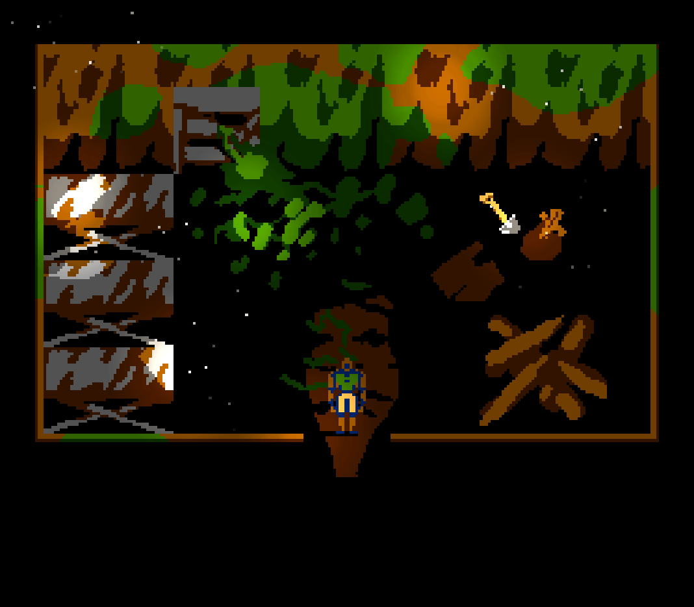
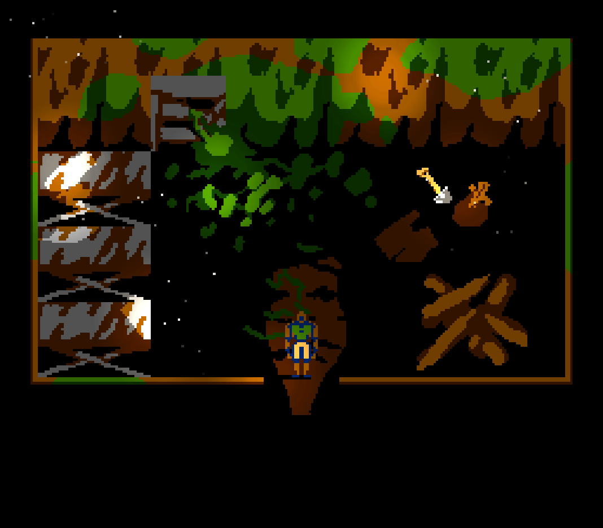